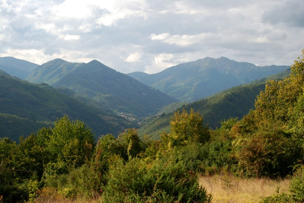

Geologia
Qui possiamo osservare la formazione la "Successione argilloso-calcarea cretacico-eocenica", composta da argille scure varicolori dal bruno al verde, con intercalati strati calcarei. Potrebbe essere il punto dove estraevano calcare per fare la calce.
Qui siamo a cavallo tra la val di Lima e la valle della Verdiana.
